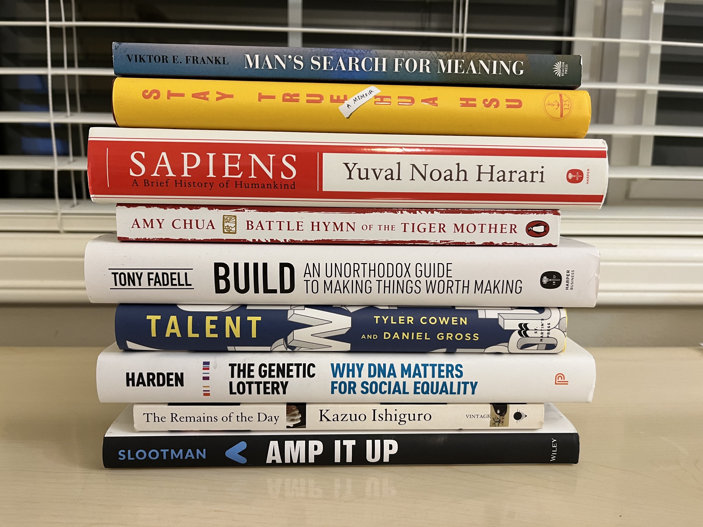

2022 Books
06 Jan 2023
I read nine books in 2022, three short of my goal of twelve and one less than last year.
Among them, I read three business books, three memoirs, one novel, and two science books. Given that I was on the job market this year, this distribution makes some sense!

Here’s a bit about each one:
Amp It Up - Frank Slootman is Snowflake’s hard-charging, no-nonsense CEO, known for his Dutch candor and hyperfocused leadership style. This book is a concise, no-frills guidebook to his philosophy on business and management. Despite the book’s generic-sounding title, Slootman delivers non-obvious insights, distilled from his experience leading three iconic software-as-a-service companies.
One of my favorite “Slootmanisms” is his pithy take on evaluating talent: “Education matters. Experience matters more. Aptitude matters most.” Sounds obvious, but is actually somewhat heretical. Fun fact: Frank responds to cold-emails, including one I sent him about an interview he did with Bloomberg! Interesting guy, interesting book.
Talent -
Sapiens -
My favorite books were: Man’s Search for Meaning, Battle Hymn of the Tiger Mother, and Sapiens. Honorable mention goes to The Remains of the Day (the movie is even better!)
Read More
- 2022 Job Search (21 Jun 2022)
- 2021 Books (01 Jan 2022)
- Regret Minimization (08 Sep 2021)
- Machine Learning (31 Aug 2021)
- Required Reading (16 Jul 2021)
- Revolutions (14 Oct 2017)
- On Computer Science (15 Sep 2017)
- Samvit's Guide to the World Wide Web (28 Aug 2017)
- How to Pick Your Next Gig: Evaluating Startups - Part II (14 Aug 2017)
- How to Pick Your Next Gig: Evaluating Startups - Part I (14 Aug 2017)
- A Brief Primer: Stochastic Gradient Descent (20 Jul 2017)
- Why Parallelism? An Example from Deep Reinforcement Learning (06 Jul 2017)